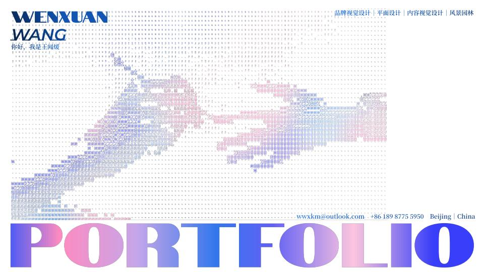

<!doctype html><html lang="zh-CN"><meta charset="utf-8"><meta name="viewport" content="width=device-width,initial-scale=1"><title>王闻煖｜设计作品集</title><style>body{margin:0;background:#fff5e7;color:#252525;font-family:Arial,'Microsoft YaHei',sans-serif}main{max-width:1100px;margin:auto;padding:40px 24px}h1{font-size:32px}p{line-height:1.8;color:#666}nav{display:flex;gap:16px;margin:24px 0;flex-wrap:wrap}a{background:#234eb5;color:white;text-decoration:none;padding:14px 22px;border-radius:8px}img{width:100%;border-radius:10px}iframe{width:100%;height:80vh;border:0;background:white;margin-top:24px}</style><main><h1>王闻煖 · 设计作品集</h1><p>品牌与数字体验 / 风景园林 / 插画与个人创作<br>33 页 · PDF 约 12.9 MB，在线轻量版；页面以图片呈现，保留原有外部链接。</p><nav><a href="portfolio.pdf" target="_blank">打开 PDF</a><a href="portfolio.pdf" download="Wang_Wenxuan_Portfolio.pdf">下载作品集</a></nav><iframe src="portfolio.pdf" title="作品集在线阅读" loading="lazy"></iframe></main></html>

